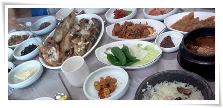

올해 여름은 여행을 많이 한 편이더군.
여름 여행의 시작은 7월부터.
7월 24일 2박3일 속초로 여행을 떠났다.
계기는 동함이 한화설악쏘라노 콘도 예약을 했다며, 같이 하자고 한 제의로 시작했다.
우리 식구는 일요일부터 월요일까지 2박 3일. 동함식구는 3박4일.
원래계획을 아침일찍 출발하여 콘도 체크인하기 전까지 속초해변에서 놀 생각으로 알람을 5시로 맞춰놨었다.
헌데, 새벽에 천둥번개를 동반한 비소리에 해변에서 놀기는 글렀다 생각하여 다시 침대로 들어가, 9시반에 출발했다.
미시령을 통과하기 전까지는 후덥지근한 날씨였는데, 미시령을 통과하니 기온이 뚝 떨어지더군.
온도도 일기예보대로 21도.
12시반 쏘라노콘도에 도착했다.
유럽풍으로 리모델링하여 최근 오픈한 럭셔리 콘도라는데, 실망감이 많이 들었다.
부족한 주차장, 돗데기 시장같은 로비와 복도, 체크인하는데 번호표를 뽑고 1시간 대기해야 한다는 것.
이제까지 이정도로 혼란스런 콘도를 경험해보지 못해서인지도 모르겠다.
체크인하는데 1시간을 기다리느니 그 시간에 점심을 먹고 오기로 했다.
여행을 가게 되면, 가장 큰 고민거리는 어디서 뭘 먹느냐하는 것.
어설프게 갔다가는, 여행의 질을 크게 떨어뜨리기에, 믿을 만한 사람의 경험을 듣는 게 가장 중요했다.
그 때 떠오른 사람이 여행, 특히 속초 여행 전문가 뽀다아빠네모님.
그 분 블로그에 맛집 추천을 부탁하니, 오성식당과 외옹치항의 회집을 추천해 주었다.
네비게이션에 오성식당을 입력하여 속초시내로 향했다.
- 오성식당 여기서 주문한 것은 돌솥밥생선구이정식. 1인분에 12,000원

- 돌솥밥생선구이정식. 사진보다 괜찮게 나온다.
작년 속초 동명항에 엄청 실망하고 먹은 생선구이와 비교하니 더더욱 좋아보이더군.
저녁은 외옹치항으로 갔다. 상호까지는 추천받지 못해 어디 집에 들어갈까 하다가, 선아네횟집이란 곳으로 들어갔다.
2식구 총 6명이라, 광어한마리와 해삼,멍게,오징어 하여 8만원으로 맞췄다.
여기에 공기밥4개와 맥주1병, 사이다1병을 하니 총 88,000원.
원래 내가 회를 좋아하지 않지만, 유일하게 맛있게 먹는 회가 바다낚시가서 직접 잡은 회.
그런데, 여기 외옹치항에서 회를 먹으니, 바다낚시 선상에서 먹던 그 맛이 나는 거였다.
역시 물고기는 수족관에 머문 시간과 맛이 반비례한다는 것을 깨달을 수 있었다.
항에서 바로 가져온 물고기를 하니, 아무래도 수족관에 머문 시간이 몇시간 안되어서 맛있나 보다.
다음 날 간 곳은, 백담사.
속초쪽으로 여행할 때는 항상 백담사라는 표지말을 보지만, 여지껏 안 가봤던 곳이다.
만해 한용운보다는 전두환때문에서 더 유명해진 절이란 반감때문에 안 가봤는지도 모르겠다.
백담사에 가기 위해선, 백담사 입구의 주차장에 주차를 해야하고, 셔틀버스를 타야했다.
주차요금은 4,000원, 그리고 셔틀버스는 편도로 성인 2,000원, 아이 1,000원.
백담사를 가기 위해서는 마을에서 차를 가지고 갈 수 없게 만들어 너무 폭리를 취한다는 느낌이 든다.
주차장도 셔틀버스도 모두 마을에서 운영한다.
- 버스를 타고 백담사로 간다.
버스로 한 10km정도 가기때문에 걸어가기는 부담되기는 한다.
백담사 가는 길의 풍경은 참 좋았다.
역시 설악이구라는 감탄이 나왔다.
지금은 막혀버린, 내가 신혼여행으로 갔었던 금강산의 산새와 비슷한 풍경이었다.
- 백담사에 도착하여 버스 하차.
- 백담사가 고도상 산의 중턱에 있는 것을 생각했을 때 이런 넓찍한 개울이 있다는 게 생경했다.
- 백담사 온 기념 사진 한방. 햇볕이 쨍쨍했다.
백담사는 여느 유명한 사찰에 비해 단촐한 편이었다.
그다지 멋진 건물은 없어 보였다.
대신 절이 위치한 곳만큼은 정말 좋았다.
전두환이 괜히 이곳으로 온 것은 아니구나라는 생각이 들었다.
참회하러 왔다가 했었는데, 그건 뻥인 것 같고, 요양 온 것 같다.
- 절내에서 가장 멋인는 건물이 저 기념품 판매점겸 까페.
너와지붕으로 되어 있다.
헌데, 저 기념품가게의 태도는 백담사에 대한 좋은 인상 자체를 완전히 날려버렸다.
입구에 크게 씌여 있는 "단체학생 출입금지", 그리고 판매물품마다 씌여있는 "만지지 마시오"라는 경고문.
아마 단체학생 출입금지는 학생들이 단체로 들어오면 시끄럽기만 하고 물건을 별로 사지 않는다는 뜻일게다.
헌데, 기념품을 팔면서 만지지 말라니...
품질을 가늠하기 위해서 시각보다는 촉각이 크게 도움이 되는데, 촉각을 사용하지 말라니 영 실망이다.
딸내미가 풍경을 보고 소리를 듣기 위해 풍경을 만지자, 잭각 들리는 판매원의 날카로운 목소리 '거기! 만지면 안되요!'
요즘 다른 사찰들은 무료로 차도 주면서, 절에 대한 호감을 늘리는데 노력하는데 비해, 이 곳 백담사는 호감을 비호감으로 만드는 듯 하다.
- 전두환이 머물었다는 방.
분명 자랑스런 자가 아닌데, 저렇게 써놓고, 전두환이 사용했던 물품까지 전시해놓고 있었다.
1988년 서울올림픽이 끝나고, 5공비리 청문회가 있었다.
그전까지 기세등등하던 전두환은 5공비리 청문회 증인출석을 회피하고자, 이곳 백담사로 숨었다.
그리고 김영삼때 사형선고 받고, 김대중정부때 사면을 받고, 여지껏 뻔뻔히 지내고 있다.
그 시절을 중고등학생을 보내면서, 우리나라가 발전하고 있다고 느껴 왔었는데, 3년전부터 다시 전두환시절로 회귀하는 것 보니 떨떠름하기도 하다. 많은 회원을 보유한 전사모가 많이 찾아오나 보다.
- 이 계곡에서 유일하게 발을 담글 수 있는 곳이 바로 백담사 바로 앞 개울가.
물에 목마른 애들이 비로소 활기를 찾았다.

- 점심은 백담사를 내려와 주차장 바로 앞에 있는 원진식당에서 산채비빔밥.
강원도, 특히 관광지에 있는 식당치고는 괜찮았다. 맛도 있어, 나중에 속초쪽로 갈 일이 있으면 휴게소보다는 이곳에서 밥을 먹고 가는 것이 좋을 것 같다.
다시 미시령을 넘어 영동으로 오니, 뜨겁던 태양은 구름속에, 그리고 서늘한 온도였다.
외옹치해변으로 갔다.
유명하기야 속초해변이 더 유명하고 사람도 많지만, 애들이 있으면 아무래도 사람 적은 곳이 좋다.
- 21도의 서늘한 온도에 해변에 사람이 별로 없다.
- 비도 조금씩 와, 잠시 파라솔에서 휴식.
저 파라솔 테이블은 2006년 9월에 당시 유티의 지름멤버였던 나,동함,허진원씨 이렇게 세명이 샀던 거였다.
그때 반품상품이라 하여 개당 9,800원인가 했었다.
내가 샀던 것은 한 2년 쓰고 다리 망가져 버리고, 동함이 사놓고 쳐박아 놓은 것을 달라 하여 내가 쓰고 있다.
이렇게 해변가에서 쓰니 아주 좋다.
애들은 모래놀이를 하고, 어른들은 의자에 앉아 노닥거리고,..
- 콘도에서 뭔가 동영상을 보고 있는 애들.
여행을 마치고 다음날 회사 출근하니, 오후부터 폭우가 쏟아지고, 경춘고속도로에 토사 유출로 도로도 막혔다고 하더군.
그 다음날엔 서울 강남에 집중 폭우로 강남역 침수와 우면산 산사태.
위험한 시기를 피해 아주 적절하게 잘 갔다 왔다.


최근 덧글